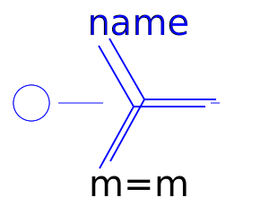
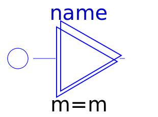
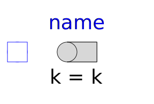
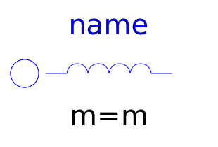
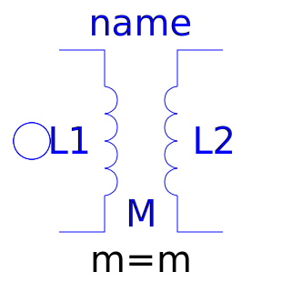

This package contains basic analog electrical multiphase components.
| Name | Description |
|---|---|
| Star-connection | |
| Delta (polygon) connection | |
|  MultiStar | Star connection of multi phase systems consisting of multiple base systems |
|  MultiDelta | Delta (polygon) connection of multi phase systems consisting of multiple base systems |
| Resistance connection of star points | |
| Connect one (positive) Pin | |
|  PlugToPin_n | Connect one (negative) Pin |
| Connect all (positive) Pins | |
| Connect all (negative) Pins | |
| Ideal linear electrical resistors | |
| Ideal linear electrical conductors | |
| Ideal linear electrical capacitors | |
|  Inductor | Ideal linear electrical inductors |
| Simple model of inductors with saturation | |
| Linear mutual inductor | |
| Linear zero sequence inductor | |
|  Transformer | Multiphase Transformer |
| Ideal linear electrical resistors with variable resistance | |
| Ideal linear electrical conductors with variable conductance | |
| Ideal linear electrical capacitors with variable capacitance | |
| Ideal linear electrical inductors with variable inductance |